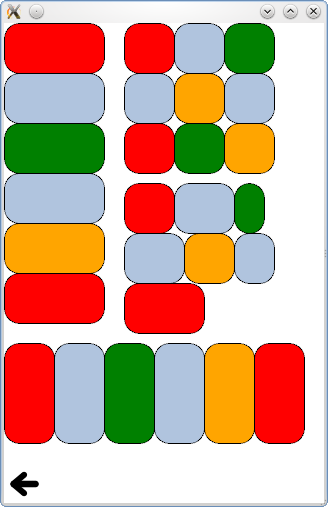

QtQuick Examples - Positioners
This is a collection of QML Positioner examples.

This is a collection of small QML examples relating to positioners. Each example is a small QML file emphasizing a particular element or feature.
Transitions shows animated transitions when showing or hiding items in a positioner. It consists of a scene populated with items in a variety of positioners: Column, Row, Grid and Flow. Each positioner has animations described as Transitions.
The move transition specifies how items inside a positioner will animate when they are displaced by the appearance or disappearance of other items.
The add transition specifies how items will appear when they are added to a positioner.
The populate transition specifies how items will appear when their parent positioner is first created.
Attached Properties shows how the Positioner attached property can be used to determine where an item is within a positioner.
Files: